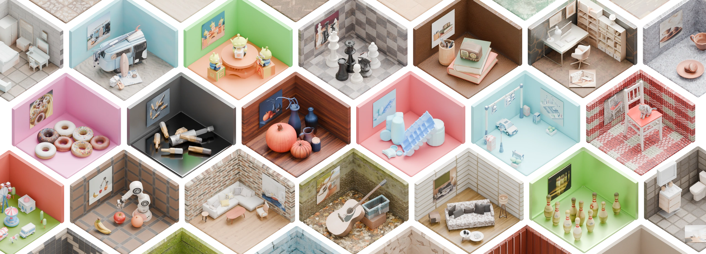
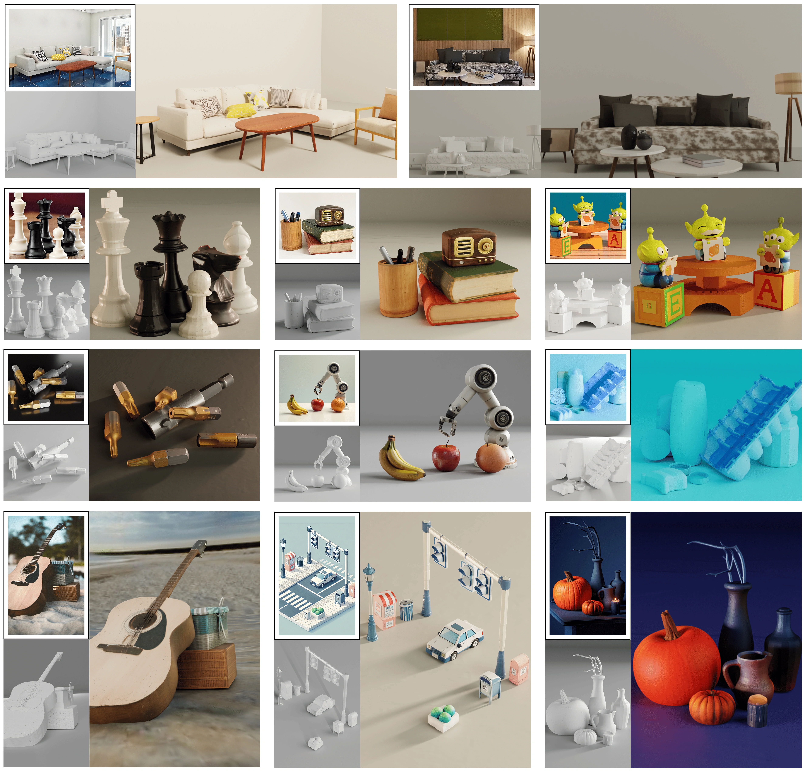

CAST: Component-Aligned 3D Scene Reconstruction from an RGB Image
Research overview
CAST reconstructs a scene as individually editable 3D objects from one RGB image. It combines image segmentation, depth cues, and object relationships with generation that accounts for occlusion. Objects are then aligned to the observed scene, and a physics-aware refinement adjusts their positions to reduce floating geometry and intersections. The reconstructed scenes can support simulation and interactive applications.
Summary · Read original ↗01 / 02Scroll to explore ↓

